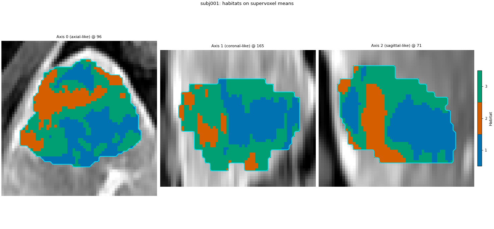
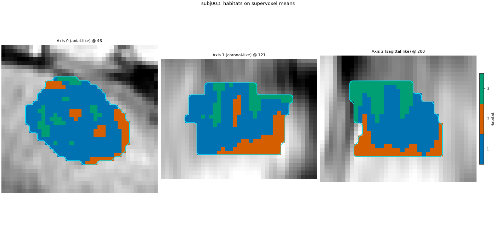
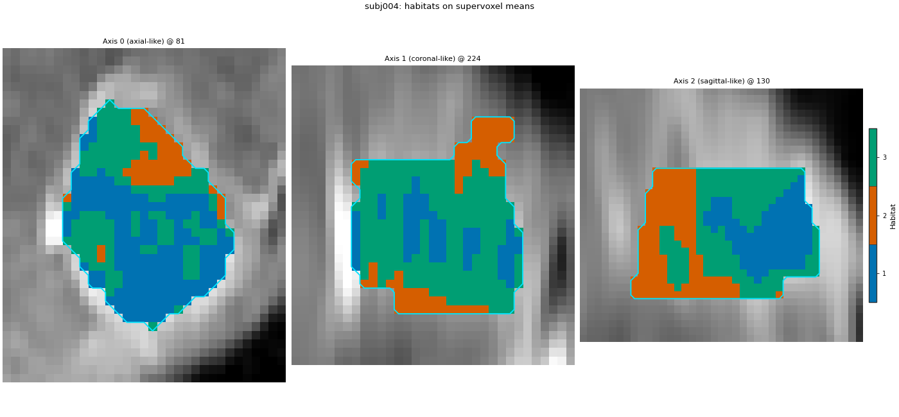
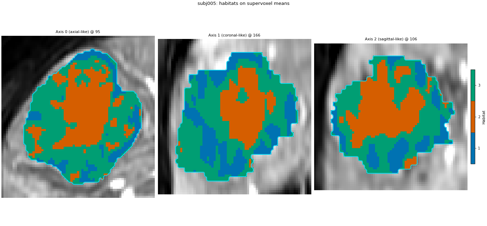
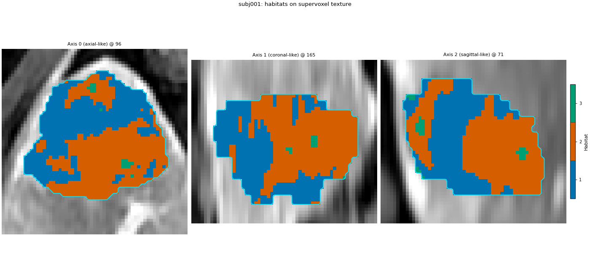
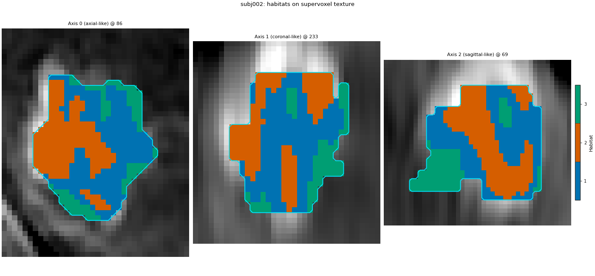
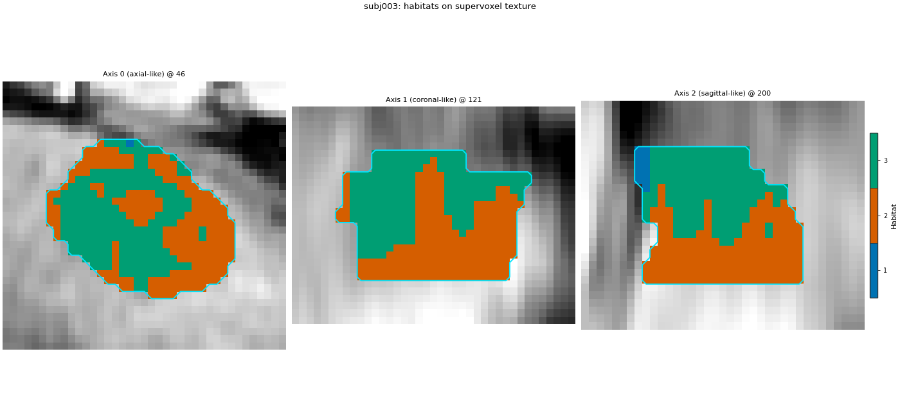
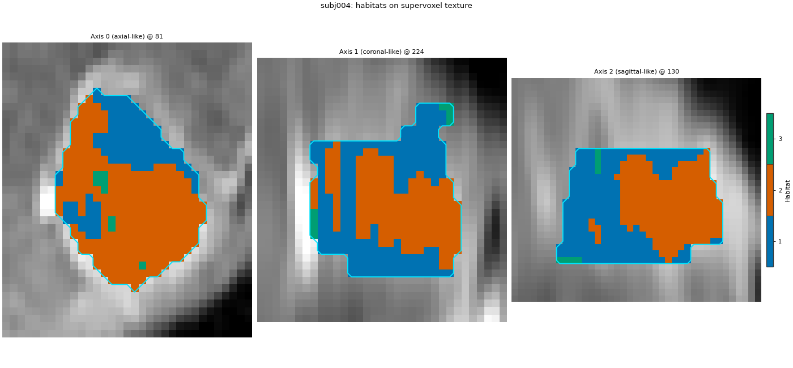
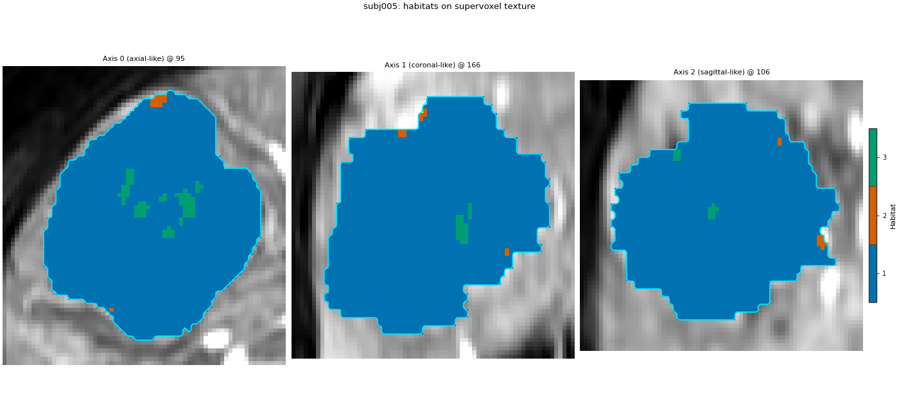

Note
Go to the end to download the full example code.
Supervoxels inside each subject#
Background. One-step habitats are fit separately in every patient, so the habitat ids are not shared. Cutting each tumour into supervoxels first makes a habitat a group of patches. Those patches can be described by the mean of the voxel features, or by texture measured on the original images.
Purpose. On all five demo patients you will:
cut supervoxels from a voxel table that holds only PVP local GLCM (Contrast, JointEntropy), then cluster each patient’s supervoxel means;
in a second analysis, cut from four-phase intensity plus the same PVP GLCM, replace the means with per-supervoxel radiomics on the four original phases, and cluster those whole-patch texture rows.
Each analysis prints habitat volume fractions and draws every patient’s habitat map. Nothing is pooled. There is no cohort model.
The same steps written as individual components, checked against this page voxel for voxel, are in Supervoxels inside each subject, from components.
When to use. When habitats should describe regions inside one tumour. If habitat 1 must mean the same thing in every patient, use the two-step design instead.
Key terms.
one-step – no
poolstage.fitruns once per subject.partition – the supervoxel step. With no
poolafter it, the supervoxels stay inside the subject that produced them.voxel features (mean path) – only PVP local GLCM (Contrast, JointEntropy; kernel radius 3, bin width 12). No raw intensities and no first-order voxel texture.
supervoxel features – one row per supervoxel.
mean_voxel_featuresaverages the voxel table.supervoxel_radiomicsruns PyRadiomics on the whole patch of the original images (no kernel): first-order Mean/Variance plus the same two GLCM names, once per phase.
Load the five demo patients#
Change DATA / MODALITIES / ROI to your preprocessed layout. sphinx_gallery_thumbnail_number = 1
from pathlib import Path
import matplotlib.pyplot as plt
from habit.contracts import cohort_from_directory
from habit.datasets import fetch_demo
from habit.recipes import Study
from habit.spec import HabitatSpec, Spec, Stage
from habit.viz import plot_habitat_overlay
DATA = fetch_demo()
MODALITIES = ("pre_contrast", "LAP", "PVP", "delay_3min")
ROI = "LAP"
cohort = cohort_from_directory(DATA, modalities=MODALITIES, roi=ROI)
print(cohort)
Path("out").mkdir(exist_ok=True)
# PVP voxel texture only: two GLCM features in a 7x7x7 neighbourhood.
# Not the bundled full voxel radiomics preset; no first-order block.
voxel_texture_params = {
"imageType": {"Original": {}},
"featureClass": {"glcm": ["Contrast", "JointEntropy"]},
"setting": {"binWidth": 12.0, "normalize": False},
}
# Whole-supervoxel radiomics on the four original phases (no kernel).
region_radiomics_params = {
"imageType": {"Original": {}},
"featureClass": {
"firstorder": ["Mean", "Variance"],
"glcm": ["Contrast", "JointEntropy"],
},
"setting": {"binWidth": 12.0, "normalize": False},
}
# Mean-path extract is inlined below: PVP local GLCM only (no raw).
HABIT demo data (cached)
DATA (preprocessed root): C:\Users\dongm\.habit_data\demo-data-v1\preprocessed
On-disk inventory of this folder:
subjects (5): subj001, subj002, subj003, subj004, subj005
image series: LAP, PVP, delay_3min, pre_contrast
mask keys: LAP, PVP, delay_3min, pre_contrast
example image: images/subj001/delay_3min/WATER__BH_Ax_LAVA_Flex_3min_Series0012.nrrd
example mask: masks/subj001/delay_3min/WATER__BH_Ax_LAVA_Flex_10min_Series0017_mask.nrrd
Your own data must use the same folder tree (change IDs / series names):
DATA/
images/<subject_id>/<modality>/<one image file>
masks/<subject_id>/<roi>/<one mask file>
Then load it with the same call the demos use:
cohort = cohort_from_directory(DATA, modalities=("LAP",), roi="LAP")
Swap DATA / modalities / roi to match your tree. Mask key is often the
same as one image series (here LAP).
Cohort(5 subjects [subj001, subj002, subj003, subj004, subj005])
Cluster supervoxel means inside each patient#
The voxel table is only PVP local GLCM Contrast and JointEntropy
(7x7x7 neighbourhood, bin width 12). Winsorize and z-score run per
patient before the cut. kmeans with 150 supervoxels groups voxels
by that texture profile. mean_voxel_features is the row each
supervoxel sends to the habitat kmeans. fit has no pool
before it, so it runs once per patient.
mean_result = Study(
HabitatSpec(
name="one_step_supervoxel_means",
stages=(
Stage(
"extract",
Spec(
"voxel_radiomics",
{
"modality": "PVP",
"roi": ROI,
"kernel_radius": 3,
"params": voxel_texture_params,
},
),
),
Stage("preprocess", Spec("winsorize", {"winsor_limits": [0.01, 0.01]})),
Stage("preprocess2", Spec("zscore")),
Stage("partition", Spec("kmeans", {"n_supervoxels": 150, "n_init": 3})),
Stage("supervoxel_features", Spec("mean_voxel_features")),
Stage("fit", Spec("kmeans", {"n_habitats": 3, "n_init": 10})),
Stage("assign", Spec("nearest_centroid")),
Stage("quantify", Spec("volume")),
),
random_seed=0,
)
).fit_predict(cohort)
print("cohort model:", mean_result.habitat_model)
fractions = mean_result.features.frame.set_index("subject")
print(fractions.filter(like="volume_fraction").round(3).to_string())
Cohort.map[_DefineAndLabelWithinSubject]: 0%| | 0/5 [00:00<?, ?it/s]voxel_radiomics: glcm batch 1/35 0.522s peak=1MiB
voxel_radiomics: glcm batch 2/35 0.065s peak=2MiB
voxel_radiomics: glcm batch 3/35 0.060s peak=3MiB
voxel_radiomics: glcm batch 4/35 0.073s peak=5MiB
voxel_radiomics: glcm batch 5/35 0.061s peak=6MiB
voxel_radiomics: glcm batch 6/35 0.062s peak=7MiB
voxel_radiomics: glcm batch 7/35 0.065s peak=8MiB
voxel_radiomics: glcm batch 8/35 0.057s peak=9MiB
voxel_radiomics: glcm batch 9/35 0.056s peak=10MiB
voxel_radiomics: glcm batch 10/35 0.062s peak=11MiB
voxel_radiomics: glcm batch 11/35 0.058s peak=13MiB
voxel_radiomics: glcm batch 12/35 0.064s peak=14MiB
voxel_radiomics: glcm batch 13/35 0.059s peak=15MiB
voxel_radiomics: glcm batch 14/35 0.059s peak=16MiB
voxel_radiomics: glcm batch 15/35 0.055s peak=17MiB
voxel_radiomics: glcm batch 16/35 0.060s peak=18MiB
voxel_radiomics: glcm batch 17/35 0.058s peak=20MiB
voxel_radiomics: glcm batch 18/35 0.057s peak=21MiB
voxel_radiomics: glcm batch 19/35 0.060s peak=22MiB
voxel_radiomics: glcm batch 20/35 0.069s peak=23MiB
voxel_radiomics: glcm batch 21/35 0.061s peak=24MiB
voxel_radiomics: glcm batch 22/35 0.057s peak=25MiB
voxel_radiomics: glcm batch 23/35 0.055s peak=26MiB
voxel_radiomics: glcm batch 24/35 0.061s peak=28MiB
voxel_radiomics: glcm batch 25/35 0.058s peak=29MiB
voxel_radiomics: glcm batch 26/35 0.060s peak=30MiB
voxel_radiomics: glcm batch 27/35 0.058s peak=31MiB
voxel_radiomics: glcm batch 28/35 0.059s peak=32MiB
voxel_radiomics: glcm batch 29/35 0.056s peak=33MiB
voxel_radiomics: glcm batch 30/35 0.056s peak=34MiB
voxel_radiomics: glcm batch 31/35 0.051s peak=36MiB
voxel_radiomics: glcm batch 32/35 0.048s peak=37MiB
voxel_radiomics: glcm batch 33/35 0.064s peak=38MiB
voxel_radiomics: glcm batch 34/35 0.052s peak=39MiB
voxel_radiomics: glcm batch 35/35 0.036s peak=40MiB
E:\conda\mconda\envs\py310\lib\site-packages\threadpoolctl.py:1226: RuntimeWarning:
Found Intel OpenMP ('libiomp') and LLVM OpenMP ('libomp') loaded at
the same time. Both libraries are known to be incompatible and this
can cause random crashes or deadlocks on Linux when loaded in the
same Python program.
Using threadpoolctl may cause crashes or deadlocks. For more
information and possible workarounds, please see
https://github.com/joblib/threadpoolctl/blob/master/multiple_openmp.md
warnings.warn(msg, RuntimeWarning)
Cohort.map[_DefineAndLabelWithinSubject]: 20%|██ | 1/5 [00:14<00:57, 14.41s/it]voxel_radiomics: glcm batch 1/10 0.160s peak=41MiB
voxel_radiomics: glcm batch 2/10 0.058s peak=41MiB
voxel_radiomics: glcm batch 3/10 0.057s peak=41MiB
voxel_radiomics: glcm batch 4/10 0.049s peak=42MiB
voxel_radiomics: glcm batch 5/10 0.055s peak=42MiB
voxel_radiomics: glcm batch 6/10 0.055s peak=42MiB
voxel_radiomics: glcm batch 7/10 0.052s peak=43MiB
voxel_radiomics: glcm batch 8/10 0.049s peak=43MiB
voxel_radiomics: glcm batch 9/10 0.043s peak=44MiB
voxel_radiomics: glcm batch 10/10 0.035s peak=44MiB
Cohort.map[_DefineAndLabelWithinSubject]: 40%|████ | 2/5 [00:17<00:26, 8.83s/it]voxel_radiomics: glcm batch 1/7 0.081s peak=44MiB
voxel_radiomics: glcm batch 2/7 0.089s peak=44MiB
voxel_radiomics: glcm batch 3/7 0.046s peak=45MiB
voxel_radiomics: glcm batch 4/7 0.049s peak=45MiB
voxel_radiomics: glcm batch 5/7 0.045s peak=45MiB
voxel_radiomics: glcm batch 6/7 0.041s peak=45MiB
voxel_radiomics: glcm batch 7/7 0.015s peak=46MiB
Cohort.map[_DefineAndLabelWithinSubject]: 60%|██████ | 3/5 [00:20<00:13, 6.84s/it]voxel_radiomics: glcm batch 1/6 0.121s peak=46MiB
voxel_radiomics: glcm batch 2/6 0.098s peak=46MiB
voxel_radiomics: glcm batch 3/6 0.095s peak=46MiB
voxel_radiomics: glcm batch 4/6 0.066s peak=47MiB
voxel_radiomics: glcm batch 5/6 0.054s peak=47MiB
voxel_radiomics: glcm batch 6/6 0.041s peak=47MiB
Cohort.map[_DefineAndLabelWithinSubject]: 80%|████████ | 4/5 [00:23<00:05, 5.87s/it]voxel_radiomics: glcm batch 1/81 0.216s peak=50MiB
voxel_radiomics: glcm batch 2/81 0.127s peak=52MiB
voxel_radiomics: glcm batch 3/81 0.072s peak=54MiB
voxel_radiomics: glcm batch 4/81 0.068s peak=57MiB
voxel_radiomics: glcm batch 5/81 0.072s peak=59MiB
voxel_radiomics: glcm batch 6/81 0.074s peak=61MiB
voxel_radiomics: glcm batch 7/81 0.082s peak=2MiB
voxel_radiomics: glcm batch 8/81 0.108s peak=5MiB
voxel_radiomics: glcm batch 9/81 0.135s peak=7MiB
voxel_radiomics: glcm batch 10/81 0.144s peak=9MiB
voxel_radiomics: glcm batch 11/81 0.125s peak=12MiB
voxel_radiomics: glcm batch 12/81 0.132s peak=14MiB
voxel_radiomics: glcm batch 13/81 0.090s peak=17MiB
voxel_radiomics: glcm batch 14/81 0.077s peak=19MiB
voxel_radiomics: glcm batch 15/81 0.077s peak=21MiB
voxel_radiomics: glcm batch 16/81 0.075s peak=24MiB
voxel_radiomics: glcm batch 17/81 0.076s peak=26MiB
voxel_radiomics: glcm batch 18/81 0.072s peak=28MiB
voxel_radiomics: glcm batch 19/81 0.076s peak=31MiB
voxel_radiomics: glcm batch 20/81 0.092s peak=33MiB
voxel_radiomics: glcm batch 21/81 0.130s peak=35MiB
voxel_radiomics: glcm batch 22/81 0.129s peak=38MiB
voxel_radiomics: glcm batch 23/81 0.106s peak=40MiB
voxel_radiomics: glcm batch 24/81 0.116s peak=42MiB
voxel_radiomics: glcm batch 25/81 0.075s peak=45MiB
voxel_radiomics: glcm batch 26/81 0.078s peak=47MiB
voxel_radiomics: glcm batch 27/81 0.093s peak=50MiB
voxel_radiomics: glcm batch 28/81 0.147s peak=52MiB
voxel_radiomics: glcm batch 29/81 0.135s peak=54MiB
voxel_radiomics: glcm batch 30/81 0.088s peak=57MiB
voxel_radiomics: glcm batch 31/81 0.077s peak=59MiB
voxel_radiomics: glcm batch 32/81 0.079s peak=61MiB
voxel_radiomics: glcm batch 33/81 0.077s peak=64MiB
voxel_radiomics: glcm batch 34/81 0.076s peak=66MiB
voxel_radiomics: glcm batch 35/81 0.078s peak=68MiB
voxel_radiomics: glcm batch 36/81 0.075s peak=71MiB
voxel_radiomics: glcm batch 37/81 0.076s peak=73MiB
voxel_radiomics: glcm batch 38/81 0.076s peak=76MiB
voxel_radiomics: glcm batch 39/81 0.079s peak=78MiB
voxel_radiomics: glcm batch 40/81 0.081s peak=80MiB
voxel_radiomics: glcm batch 41/81 0.077s peak=83MiB
voxel_radiomics: glcm batch 42/81 0.076s peak=85MiB
voxel_radiomics: glcm batch 43/81 0.078s peak=87MiB
voxel_radiomics: glcm batch 44/81 0.081s peak=90MiB
voxel_radiomics: glcm batch 45/81 0.076s peak=92MiB
voxel_radiomics: glcm batch 46/81 0.082s peak=94MiB
voxel_radiomics: glcm batch 47/81 0.076s peak=97MiB
voxel_radiomics: glcm batch 48/81 0.081s peak=99MiB
voxel_radiomics: glcm batch 49/81 0.078s peak=101MiB
voxel_radiomics: glcm batch 50/81 0.081s peak=104MiB
voxel_radiomics: glcm batch 51/81 0.077s peak=106MiB
voxel_radiomics: glcm batch 52/81 0.084s peak=109MiB
voxel_radiomics: glcm batch 53/81 0.075s peak=111MiB
voxel_radiomics: glcm batch 54/81 0.083s peak=113MiB
voxel_radiomics: glcm batch 55/81 0.079s peak=116MiB
voxel_radiomics: glcm batch 56/81 0.078s peak=118MiB
voxel_radiomics: glcm batch 57/81 0.079s peak=120MiB
voxel_radiomics: glcm batch 58/81 0.078s peak=123MiB
voxel_radiomics: glcm batch 59/81 0.082s peak=125MiB
voxel_radiomics: glcm batch 60/81 0.091s peak=127MiB
voxel_radiomics: glcm batch 61/81 0.133s peak=130MiB
voxel_radiomics: glcm batch 62/81 0.130s peak=132MiB
voxel_radiomics: glcm batch 63/81 0.135s peak=134MiB
voxel_radiomics: glcm batch 64/81 0.090s peak=137MiB
voxel_radiomics: glcm batch 65/81 0.085s peak=139MiB
voxel_radiomics: glcm batch 66/81 0.132s peak=142MiB
voxel_radiomics: glcm batch 67/81 0.132s peak=144MiB
voxel_radiomics: glcm batch 68/81 0.142s peak=146MiB
voxel_radiomics: glcm batch 69/81 0.102s peak=149MiB
voxel_radiomics: glcm batch 70/81 0.082s peak=151MiB
voxel_radiomics: glcm batch 71/81 0.075s peak=2MiB
voxel_radiomics: glcm batch 72/81 0.074s peak=5MiB
voxel_radiomics: glcm batch 73/81 0.084s peak=7MiB
voxel_radiomics: glcm batch 74/81 0.078s peak=9MiB
voxel_radiomics: glcm batch 75/81 0.080s peak=12MiB
voxel_radiomics: glcm batch 76/81 0.078s peak=14MiB
voxel_radiomics: glcm batch 77/81 0.080s peak=17MiB
voxel_radiomics: glcm batch 78/81 0.131s peak=19MiB
voxel_radiomics: glcm batch 79/81 0.108s peak=21MiB
voxel_radiomics: glcm batch 80/81 0.084s peak=24MiB
voxel_radiomics: glcm batch 81/81 0.015s peak=26MiB
Cohort.map[_DefineAndLabelWithinSubject]: 100%|██████████| 5/5 [00:36<00:00, 7.29s/it]
Cohort.map[_DefineAndLabelWithinSubject]: 100%|██████████| 5/5 [00:36<00:00, 7.29s/it]
cohort model: None
habitat_1_volume_fraction habitat_2_volume_fraction habitat_3_volume_fraction
subject
subj001 0.485 0.076 0.438
subj002 0.105 0.333 0.562
subj003 0.046 0.620 0.334
subj004 0.439 0.486 0.075
subj005 0.247 0.642 0.111
Mean-feature habitat map for every patient#
The underlay is the arterial phase (LAP). Habitats used only PVP local GLCM. Colours are per patient: habitat 1 here is not habitat 1 in the next patient.
for subject in cohort:
habitat_map = next(
item for item in mean_result.habitat_maps if item.subject_id == subject.subject_id
)
fig = plot_habitat_overlay(
subject.image(ROI),
habitat_map,
title=f"{subject.subject_id}: habitats on PVP local GLCM means",
crop_to="labels",
)
fig.savefig(
f"out/one_step_supervoxel_means_{subject.subject_id}.png",
dpi=150,
bbox_inches="tight",
)
plt.show()




F:\work\habit_project\habit\viz\habitat_overlay.py:806: UserWarning: Display geometry conflict: image/anatomy direction does not match mask/label direction. Using the mask/label direction so coronal/sagittal superior-up follows the labelled anatomy. Pass direction= to override.
resolved_direction, resolved_spacing = resolve_display_geometry(
F:\work\habit_project\habit\viz\habitat_overlay.py:806: UserWarning: Display geometry conflict: image/anatomy direction does not match mask/label direction. Using the mask/label direction so coronal/sagittal superior-up follows the labelled anatomy. Pass direction= to override.
resolved_direction, resolved_spacing = resolve_display_geometry(
F:\work\habit_project\habit\viz\habitat_overlay.py:806: UserWarning: Display geometry conflict: image/anatomy direction does not match mask/label direction. Using the mask/label direction so coronal/sagittal superior-up follows the labelled anatomy. Pass direction= to override.
resolved_direction, resolved_spacing = resolve_display_geometry(
F:\work\habit_project\habit\viz\habitat_overlay.py:806: UserWarning: Display geometry conflict: image/anatomy direction does not match mask/label direction. Using the mask/label direction so coronal/sagittal superior-up follows the labelled anatomy. Pass direction= to override.
resolved_direction, resolved_spacing = resolve_display_geometry(
F:\work\habit_project\habit\viz\habitat_overlay.py:806: UserWarning: Display geometry conflict: image/anatomy direction does not match mask/label direction. Using the mask/label direction so coronal/sagittal superior-up follows the labelled anatomy. Pass direction= to override.
resolved_direction, resolved_spacing = resolve_display_geometry(
Cluster supervoxel texture instead#
Separate extract for the cut: four-phase intensity plus PVP GLCM
(this path is independent of the mean-path texture-only extract).
Each supervoxel is then a whole-patch PyRadiomics row on the four
original phases: first-order Mean and Variance, plus GLCM Contrast
and JointEntropy, once per phase. There is no sliding kernel.
binWidth 12 discretizes the original intensities. A patch with a
single gray level leaves Contrast and JointEntropy undefined.
impute fills only those cells with that patient’s median.
texture_result = Study(
HabitatSpec(
name="one_step_supervoxel_texture",
stages=(
Stage(
"extract",
Spec(
"concat",
{
"extractors": [
{
"name": "raw",
"params": {"modalities": list(MODALITIES)},
},
{
"name": "voxel_radiomics",
"params": {
"modality": "PVP",
"kernel_radius": 3,
"params": voxel_texture_params,
},
},
],
"roi": ROI,
},
),
),
Stage("preprocess", Spec("winsorize", {"winsor_limits": [0.01, 0.01]})),
Stage("preprocess2", Spec("zscore")),
Stage("partition", Spec("kmeans", {"n_supervoxels": 150, "n_init": 3})),
Stage(
"supervoxel_features",
Spec(
"supervoxel_radiomics",
{"modalities": list(MODALITIES), "params": region_radiomics_params},
),
),
Stage("impute_texture", Spec("impute", {"strategy": "median"})),
Stage("fit", Spec("kmeans", {"n_habitats": 3, "n_init": 10})),
Stage("assign", Spec("nearest_centroid")),
Stage("quantify", Spec("volume")),
),
random_seed=0,
)
).fit_predict(cohort)
print("cohort model:", texture_result.habitat_model)
fractions = texture_result.features.frame.set_index("subject")
print(fractions.filter(like="volume_fraction").round(3).to_string())
for subject in cohort:
habitat_map = next(
item
for item in texture_result.habitat_maps
if item.subject_id == subject.subject_id
)
fig = plot_habitat_overlay(
subject.image(ROI),
habitat_map,
title=f"{subject.subject_id}: habitats on supervoxel texture",
crop_to="labels",
)
fig.savefig(
f"out/one_step_supervoxel_texture_{subject.subject_id}.png",
dpi=150,
bbox_inches="tight",
)
plt.show()





Cohort.map[_DefineAndLabelWithinSubject]: 0%| | 0/5 [00:00<?, ?it/s]voxel_radiomics: glcm batch 1/35 0.186s peak=27MiB
voxel_radiomics: glcm batch 2/35 0.062s peak=28MiB
voxel_radiomics: glcm batch 3/35 0.060s peak=29MiB
voxel_radiomics: glcm batch 4/35 0.062s peak=31MiB
voxel_radiomics: glcm batch 5/35 0.055s peak=32MiB
voxel_radiomics: glcm batch 6/35 0.056s peak=33MiB
voxel_radiomics: glcm batch 7/35 0.057s peak=34MiB
voxel_radiomics: glcm batch 8/35 0.055s peak=35MiB
voxel_radiomics: glcm batch 9/35 0.056s peak=36MiB
voxel_radiomics: glcm batch 10/35 0.060s peak=37MiB
voxel_radiomics: glcm batch 11/35 0.056s peak=39MiB
voxel_radiomics: glcm batch 12/35 0.056s peak=40MiB
voxel_radiomics: glcm batch 13/35 0.057s peak=41MiB
voxel_radiomics: glcm batch 14/35 0.060s peak=42MiB
voxel_radiomics: glcm batch 15/35 0.053s peak=43MiB
voxel_radiomics: glcm batch 16/35 0.056s peak=44MiB
voxel_radiomics: glcm batch 17/35 0.054s peak=45MiB
voxel_radiomics: glcm batch 18/35 0.058s peak=47MiB
voxel_radiomics: glcm batch 19/35 0.054s peak=48MiB
voxel_radiomics: glcm batch 20/35 0.055s peak=49MiB
voxel_radiomics: glcm batch 21/35 0.061s peak=50MiB
voxel_radiomics: glcm batch 22/35 0.059s peak=51MiB
voxel_radiomics: glcm batch 23/35 0.055s peak=52MiB
voxel_radiomics: glcm batch 24/35 0.057s peak=54MiB
voxel_radiomics: glcm batch 25/35 0.064s peak=55MiB
voxel_radiomics: glcm batch 26/35 0.065s peak=56MiB
voxel_radiomics: glcm batch 27/35 0.062s peak=57MiB
voxel_radiomics: glcm batch 28/35 0.063s peak=58MiB
voxel_radiomics: glcm batch 29/35 0.061s peak=59MiB
voxel_radiomics: glcm batch 30/35 0.058s peak=60MiB
voxel_radiomics: glcm batch 31/35 0.060s peak=62MiB
voxel_radiomics: glcm batch 32/35 0.059s peak=63MiB
voxel_radiomics: glcm batch 33/35 0.058s peak=64MiB
voxel_radiomics: glcm batch 34/35 0.053s peak=65MiB
voxel_radiomics: glcm batch 35/35 0.032s peak=66MiB
Cohort.map[_DefineAndLabelWithinSubject]: 20%|██ | 1/5 [00:08<00:35, 8.83s/it]voxel_radiomics: glcm batch 1/10 0.142s peak=67MiB
voxel_radiomics: glcm batch 2/10 0.057s peak=67MiB
voxel_radiomics: glcm batch 3/10 0.052s peak=67MiB
voxel_radiomics: glcm batch 4/10 0.053s peak=68MiB
voxel_radiomics: glcm batch 5/10 0.055s peak=68MiB
voxel_radiomics: glcm batch 6/10 0.050s peak=68MiB
voxel_radiomics: glcm batch 7/10 0.048s peak=69MiB
voxel_radiomics: glcm batch 8/10 0.047s peak=69MiB
voxel_radiomics: glcm batch 9/10 0.045s peak=69MiB
voxel_radiomics: glcm batch 10/10 0.032s peak=70MiB
Cohort.map[_DefineAndLabelWithinSubject]: 40%|████ | 2/5 [00:14<00:21, 7.13s/it]voxel_radiomics: glcm batch 1/7 0.150s peak=70MiB
voxel_radiomics: glcm batch 2/7 0.051s peak=70MiB
voxel_radiomics: glcm batch 3/7 0.046s peak=71MiB
voxel_radiomics: glcm batch 4/7 0.047s peak=71MiB
voxel_radiomics: glcm batch 5/7 0.046s peak=71MiB
voxel_radiomics: glcm batch 6/7 0.042s peak=71MiB
voxel_radiomics: glcm batch 7/7 0.018s peak=72MiB
Cohort.map[_DefineAndLabelWithinSubject]: 60%|██████ | 3/5 [00:19<00:12, 6.45s/it]voxel_radiomics: glcm batch 1/6 0.384s peak=72MiB
voxel_radiomics: glcm batch 2/6 0.059s peak=0MiB
voxel_radiomics: glcm batch 3/6 0.056s peak=1MiB
voxel_radiomics: glcm batch 4/6 0.057s peak=1MiB
voxel_radiomics: glcm batch 5/6 0.067s peak=1MiB
voxel_radiomics: glcm batch 6/6 0.045s peak=1MiB
Cohort.map[_DefineAndLabelWithinSubject]: 80%|████████ | 4/5 [00:24<00:06, 6.08s/it]voxel_radiomics: glcm batch 1/81 0.289s peak=4MiB
voxel_radiomics: glcm batch 2/81 0.101s peak=6MiB
voxel_radiomics: glcm batch 3/81 0.079s peak=8MiB
voxel_radiomics: glcm batch 4/81 0.068s peak=11MiB
voxel_radiomics: glcm batch 5/81 0.077s peak=13MiB
voxel_radiomics: glcm batch 6/81 0.075s peak=15MiB
voxel_radiomics: glcm batch 7/81 0.076s peak=18MiB
voxel_radiomics: glcm batch 8/81 0.069s peak=20MiB
voxel_radiomics: glcm batch 9/81 0.070s peak=23MiB
voxel_radiomics: glcm batch 10/81 0.076s peak=25MiB
voxel_radiomics: glcm batch 11/81 0.079s peak=27MiB
voxel_radiomics: glcm batch 12/81 0.080s peak=30MiB
voxel_radiomics: glcm batch 13/81 0.077s peak=32MiB
voxel_radiomics: glcm batch 14/81 0.075s peak=34MiB
voxel_radiomics: glcm batch 15/81 0.080s peak=37MiB
voxel_radiomics: glcm batch 16/81 0.071s peak=39MiB
voxel_radiomics: glcm batch 17/81 0.074s peak=41MiB
voxel_radiomics: glcm batch 18/81 0.076s peak=44MiB
voxel_radiomics: glcm batch 19/81 0.076s peak=46MiB
voxel_radiomics: glcm batch 20/81 0.075s peak=48MiB
voxel_radiomics: glcm batch 21/81 0.071s peak=51MiB
voxel_radiomics: glcm batch 22/81 0.073s peak=53MiB
voxel_radiomics: glcm batch 23/81 0.063s peak=56MiB
voxel_radiomics: glcm batch 24/81 0.077s peak=58MiB
voxel_radiomics: glcm batch 25/81 0.077s peak=60MiB
voxel_radiomics: glcm batch 26/81 0.074s peak=63MiB
voxel_radiomics: glcm batch 27/81 0.070s peak=65MiB
voxel_radiomics: glcm batch 28/81 0.076s peak=67MiB
voxel_radiomics: glcm batch 29/81 0.078s peak=70MiB
voxel_radiomics: glcm batch 30/81 0.090s peak=72MiB
voxel_radiomics: glcm batch 31/81 0.085s peak=74MiB
voxel_radiomics: glcm batch 32/81 0.080s peak=77MiB
voxel_radiomics: glcm batch 33/81 0.077s peak=79MiB
voxel_radiomics: glcm batch 34/81 0.078s peak=82MiB
voxel_radiomics: glcm batch 35/81 0.079s peak=84MiB
voxel_radiomics: glcm batch 36/81 0.078s peak=86MiB
voxel_radiomics: glcm batch 37/81 0.084s peak=89MiB
voxel_radiomics: glcm batch 38/81 0.080s peak=91MiB
voxel_radiomics: glcm batch 39/81 0.083s peak=93MiB
voxel_radiomics: glcm batch 40/81 0.085s peak=96MiB
voxel_radiomics: glcm batch 41/81 0.088s peak=98MiB
voxel_radiomics: glcm batch 42/81 0.081s peak=100MiB
voxel_radiomics: glcm batch 43/81 0.087s peak=103MiB
voxel_radiomics: glcm batch 44/81 0.085s peak=105MiB
voxel_radiomics: glcm batch 45/81 0.082s peak=107MiB
voxel_radiomics: glcm batch 46/81 0.078s peak=110MiB
voxel_radiomics: glcm batch 47/81 0.077s peak=112MiB
voxel_radiomics: glcm batch 48/81 0.089s peak=115MiB
voxel_radiomics: glcm batch 49/81 0.088s peak=117MiB
voxel_radiomics: glcm batch 50/81 0.087s peak=119MiB
voxel_radiomics: glcm batch 51/81 0.082s peak=122MiB
voxel_radiomics: glcm batch 52/81 0.089s peak=124MiB
voxel_radiomics: glcm batch 53/81 0.087s peak=126MiB
voxel_radiomics: glcm batch 54/81 0.094s peak=129MiB
voxel_radiomics: glcm batch 55/81 0.087s peak=131MiB
voxel_radiomics: glcm batch 56/81 0.090s peak=133MiB
voxel_radiomics: glcm batch 57/81 0.086s peak=136MiB
voxel_radiomics: glcm batch 58/81 0.086s peak=138MiB
voxel_radiomics: glcm batch 59/81 0.090s peak=141MiB
voxel_radiomics: glcm batch 60/81 0.095s peak=2MiB
voxel_radiomics: glcm batch 61/81 0.078s peak=5MiB
voxel_radiomics: glcm batch 62/81 0.082s peak=7MiB
voxel_radiomics: glcm batch 63/81 0.077s peak=9MiB
voxel_radiomics: glcm batch 64/81 0.081s peak=12MiB
voxel_radiomics: glcm batch 65/81 0.085s peak=14MiB
voxel_radiomics: glcm batch 66/81 0.075s peak=17MiB
voxel_radiomics: glcm batch 67/81 0.089s peak=19MiB
voxel_radiomics: glcm batch 68/81 0.085s peak=21MiB
voxel_radiomics: glcm batch 69/81 0.083s peak=24MiB
voxel_radiomics: glcm batch 70/81 0.085s peak=26MiB
voxel_radiomics: glcm batch 71/81 0.080s peak=28MiB
voxel_radiomics: glcm batch 72/81 0.081s peak=31MiB
voxel_radiomics: glcm batch 73/81 0.087s peak=33MiB
voxel_radiomics: glcm batch 74/81 0.081s peak=35MiB
voxel_radiomics: glcm batch 75/81 0.084s peak=38MiB
voxel_radiomics: glcm batch 76/81 0.082s peak=40MiB
voxel_radiomics: glcm batch 77/81 0.081s peak=42MiB
voxel_radiomics: glcm batch 78/81 0.076s peak=45MiB
voxel_radiomics: glcm batch 79/81 0.067s peak=47MiB
voxel_radiomics: glcm batch 80/81 0.064s peak=50MiB
voxel_radiomics: glcm batch 81/81 0.019s peak=52MiB
Cohort.map[_DefineAndLabelWithinSubject]: 100%|██████████| 5/5 [00:42<00:00, 8.59s/it]
Cohort.map[_DefineAndLabelWithinSubject]: 100%|██████████| 5/5 [00:42<00:00, 8.59s/it]
cohort model: None
habitat_1_volume_fraction habitat_2_volume_fraction habitat_3_volume_fraction
subject
subj001 0.017 0.844 0.138
subj002 0.858 0.017 0.124
subj003 0.764 0.221 0.015
subj004 0.733 0.003 0.264
subj005 0.884 0.115 0.002
F:\work\habit_project\habit\viz\habitat_overlay.py:806: UserWarning: Display geometry conflict: image/anatomy direction does not match mask/label direction. Using the mask/label direction so coronal/sagittal superior-up follows the labelled anatomy. Pass direction= to override.
resolved_direction, resolved_spacing = resolve_display_geometry(
F:\work\habit_project\habit\viz\habitat_overlay.py:806: UserWarning: Display geometry conflict: image/anatomy direction does not match mask/label direction. Using the mask/label direction so coronal/sagittal superior-up follows the labelled anatomy. Pass direction= to override.
resolved_direction, resolved_spacing = resolve_display_geometry(
F:\work\habit_project\habit\viz\habitat_overlay.py:806: UserWarning: Display geometry conflict: image/anatomy direction does not match mask/label direction. Using the mask/label direction so coronal/sagittal superior-up follows the labelled anatomy. Pass direction= to override.
resolved_direction, resolved_spacing = resolve_display_geometry(
F:\work\habit_project\habit\viz\habitat_overlay.py:806: UserWarning: Display geometry conflict: image/anatomy direction does not match mask/label direction. Using the mask/label direction so coronal/sagittal superior-up follows the labelled anatomy. Pass direction= to override.
resolved_direction, resolved_spacing = resolve_display_geometry(
F:\work\habit_project\habit\viz\habitat_overlay.py:806: UserWarning: Display geometry conflict: image/anatomy direction does not match mask/label direction. Using the mask/label direction so coronal/sagittal superior-up follows the labelled anatomy. Pass direction= to override.
resolved_direction, resolved_spacing = resolve_display_geometry(
How to read the result#
habitat_modelisNone. Each patient has its own definition insubject_models.A supervoxel is one habitat: every voxel in that patch gets the same label.
The two maps of one patient can disagree. They cluster different columns (means of PVP local GLCM vs whole-patch radiomics).
Habitat numbers are private to each patient. Do not line up habitat 1 across rows or across figures.
Five demo patients and a fixed K of 3 show the workflow, not a clinical subtype.
Where to go next#
The same analysis from individual components: Supervoxels inside each subject, from components.
The same one-step design on voxels: Habitats inside each subject with a Spec.
Habitat ids shared by every patient: Two-step habitats with a Spec.
Total running time of the script: (1 minutes 28.141 seconds)